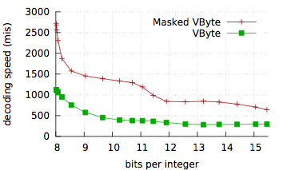

We consider the ubiquitous technique of VByte compression, which represents each integer as a variable length sequence of bytes. The low 7 bits of each byte encode a portion of the integer, and the high bit of each byte is reserved as a continuation flag. This flag is set to 1 for all bytes except the last, and the decoding of each integer is complete when a byte with a high bit of 0 is encountered. VByte decoding can be a performance bottleneck especially when the unpredictable lengths of the encoded integers cause frequent branch mispredictions. Previous attempts to accelerate VByte decoding using SIMD vector instructions have been disappointing, prodding search engines such as Google to use more complicated but faster-to-decode formats for performance-critical code. Our decoder (Masked VByte) is 2 to 4 times faster than a conventional scalar VByte decoder, making the format once again competitive with regard to speed.
Jeff Plaisance, Nathan Kurz, Daniel Lemire, Vectorized VByte Decoding, International Symposium on Web Algorithms 2015, 2015. (PDF, slides)
We have produced a dedicated C library to promote Masked VByte.
MaskedVByte was initially developped by Indeed for Imhotep. We also used a C++ library for benchmarking purposes.